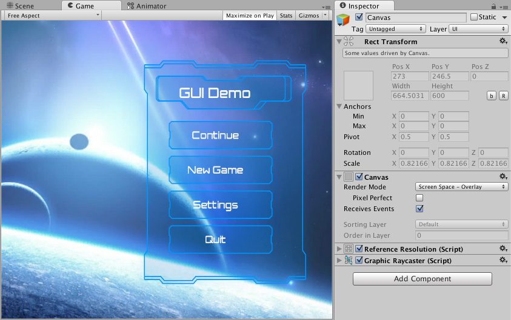
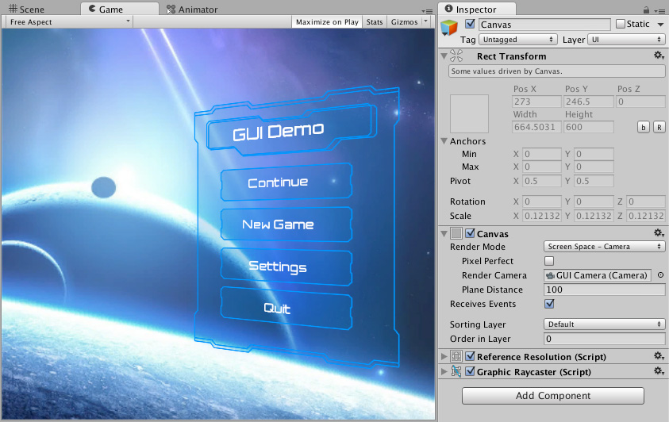

Canvas 是所有 UI 元素都应位于其中的区域。Canvas 是挂有 Canvas 组件的 GameObject，所有 UI 元素都必须是此类 Canvas 的子对象。
通过菜单创建新的 UI 元素（例如 Image）时，使用 GameObject > UI (Canvas) > Image；若场景中还没有 Canvas，Unity 会自动创建一个，并将 UI 元素创建为该 Canvas 的子对象。
Canvas 区域在 Scene View 中显示为矩形，因此无需始终显示 Game View，也能方便地定位 UI 元素。
Canvas 使用 EventSystem 对象辅助消息系统工作。
元素的绘制顺序
Canvas 内 UI 元素的绘制顺序与其在 Hierarchy 中的排列顺序相同：先绘制第一个子对象，再绘制第二个，依此类推。两个 UI 元素重叠时，后绘制的元素会显示在先绘制的元素上方。
要改变元素之间的覆盖顺序，只需在 Hierarchy 中拖动元素以重新排序。也可通过脚本调用 Transform 组件的 SetAsFirstSibling、SetAsLastSibling 和 SetSiblingIndex 方法控制顺序。
渲染模式
Canvas 的 渲染模式（Render Mode） 设置决定它在屏幕空间还是世界空间中渲染。
屏幕空间叠加（Screen Space - Overlay）
此渲染模式将 UI 元素直接放置在屏幕上，覆盖在场景之上。屏幕大小或分辨率改变时，Canvas 会自动调整大小以匹配。

屏幕空间摄像机（Screen Space - Camera）
此模式类似于 屏幕空间叠加（Screen Space - Overlay），但 Canvas 会放置在指定 摄像机（Camera）前方的一定距离处。UI 元素由该摄像机渲染，因此摄像机设置会影响 UI 的外观。若摄像机设为 透视（Perspective），UI 元素会以透视方式渲染；透视畸变的程度可以通过摄像机的 视野（Field of View）控制。屏幕大小、分辨率或摄像机视锥改变时，Canvas 也会自动调整大小以匹配。

世界空间（World Space）
此渲染模式下，Canvas 的行为与场景中的其他对象相同。可以通过 Rect Transform 手动设置 Canvas 大小；UI 元素根据其三维位置，渲染在场景中其他对象的前面或后面。这适用于作为场景世界一部分的 UI，也称为叙事内界面（diegetic interface）。

附加着色器通道
Canvas 在生成用于渲染的网格几何时，始终包含 位置（Position）、 颜色（Color）和 UV0 顶点属性。对于 屏幕空间摄像机（Screen Space - Camera） 和 世界空间（World Space） 渲染模式， 法线（Normal） 和 切线（Tangent） 也会默认包含，以支持光照。
附加着色器通道（Additional Shader Channels） 属性允许添加默认属性之外的顶点属性。当 UI 着色器采样额外的 UV 集，或叠加模式的 Canvas 需要逐顶点法线与切线数据时，这一设置很有用。
可用通道如下：
| 通道 | 说明 |
|---|---|
| 无（None） | 不添加额外属性，只包含默认属性。 |
| TexCoord1 | 为每个顶点添加第二套 UV 坐标（UV1）。 |
| TexCoord2 | 为每个顶点添加第三套 UV 坐标（UV2）。 |
| TexCoord3 | 为每个顶点添加第四套 UV 坐标（UV3）。 |
| 法线（Normal） | 为每个顶点添加法线（Vector3）。UI 几何的光照效果需要此属性。 |
| 切线（Tangent） | 为每个顶点添加切线（Vector4）。使用法线贴图的着色器需要此属性。 |
注意
屏幕空间叠加（Screen Space - Overlay） 模式的 Canvas 不受标准场景光照影响，因此 法线（Normal） 和 切线（Tangent） 通常没有可见效果。不过，TextMeshPro 使用的特殊着色器仍可使用这些数据。
反射探针
当 使用反射探针（Use Reflection Probes） 在 Canvas 上启用时， 法线（Normal） 通道会自动加入网格，不受 Additional Shader Channels 设置影响。
始终在伽马颜色空间中保存顶点颜色
在线性颜色空间项目中，Unity 通常在生成网格时，将 UI 顶点颜色从伽马空间转换到线性空间，再传入着色器。转换会损失细节，尤其是暗色区域，因为伽马编码在这些区域提供的精度最高。
顶点颜色始终使用伽马颜色空间（Vertex Color Always in Gamma Color Space） 将上述转换延后到着色器中执行。启用后，网格中的顶点颜色以伽马空间写入，UI 着色器使用浮点运算完成伽马到线性的转换，因而能在整个流程中保留更高精度。这会提升线性颜色空间工作流程中暗色色调和细微渐变的准确性。
精度提升仅在项目颜色空间设为 线性（Linear） 时有效，设置位置为Project Settings > Player。在伽马颜色空间项目中，此设置没有作用。
自定义 UI 着色器
内置 UI 着色器已包含此功能所需的伽马到线性转换。如果使用自定义 UI 着色器，启用该设置时必须手动处理转换，否则顶点颜色可能显得过亮。